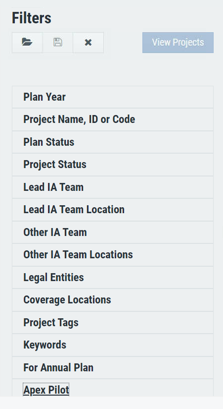

Audit Plan Management is a planning and data analytics platform that helps you plan projects, allocate resource and manage staff for
financial auditing projects. It also helps users explore, analyze and share real-time project analytics data easily.
Filters lets you filter projects based on your parameters in one place, so you can get what you are exactly looking for and find desired information faster with more peace of mind along the way.
Role and Responsibility
Started from research, conceptualising the flows to creating the visual design, conducting user feedback sessions and communicating the interaction to developers.

Problem
Earlier, filters in APM were present as a sidebar on the main screen, you must set filter parameter one by one and click on view projects which would display filtered projects. This didn’t seem to solve users problems
1. Setting all the parameters was very cumbersome, and it took the user minimum of 8 clicks to see one filtered project view.
2. The platform didn’t let one save their filter parameters, to apply the frequently used filter again.
We needed a fresh approach to solve the architecture problem of filters and solving user needs at workplace. To get a better idea of what the users really wanted, we did a simple thing: we talked to the users.

User Interviews
Users are profiled based on their department and roles. We derived the key personas and
interviewed them to understand their behaviour, problems and motivations.
User Stories
After understanding their actions, feelings, pain points and desired outcomes we went ahead to write the job stories.
1. As an auditor, I use the filter feature a lot, so I want it to be at a single click of a button.
2. As a financial analyst, I use the same set of parameters for filters very frequently, I would like to save these parameters, so everytime I dont have to set the same set of parameters again and again.
3. As a project owner, I want to see the projects getting filtered dynamically based on the filters I choose. It wastes a lot of time to enter all the parameters and then wait for the results.
Key Insights
The insights gathered from the user interviews were that users felt tiring to enter all the filter parameters now and then, and then further wait for results till everything was entered. They also felt irritated when entering the same filters again, as they used this feature very frequently.
The filter options are being set one by one and there is no real time response after one filter is set.
